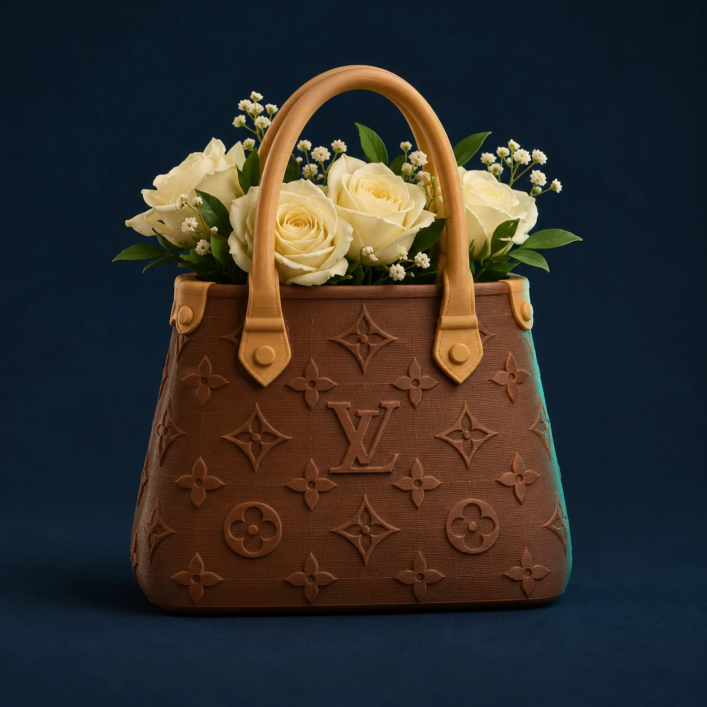

Monogram tasvaas
Een decoratieve 3D-geprinte vaas, Louis Vuitton-geïnspireerd. Alleen kant-en-klaar afgewerkt verkrijgbaar. Kies klein, middel of groot en geef je gewenste kleuren door.
Gebruik en uitvoering
- Decoratieve 3D-print; fijne printlijnen kunnen zichtbaar zijn.
- Voor droogbloemen en kunstbloemen.
- Gebruik voor verse bloemen alleen een passende waterdichte binnenvaas. Die is niet inbegrepen.
- De waterdichtheid van de print zelf is niet bevestigd; vul de print niet rechtstreeks met water.
- De kleur kan op een beeldscherm iets afwijken.
- Levertijd en definitieve uitvoering worden vooraf bevestigd.